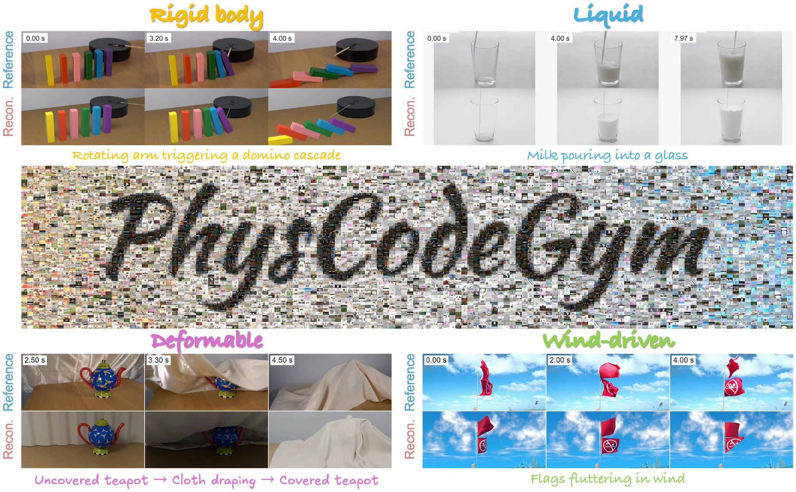
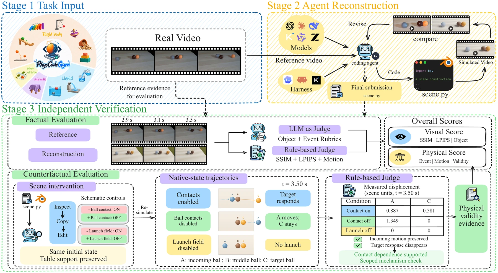

PhysCodeGym: Benchmarking Coding Agents for Physically Verifiable 4D Reconstruction
- PaperPhysCodeGym: Benchmarking Coding Agents for Physically Verifiable 4D Reconstruction
- AuthorsShuai Shao, Jinchen He, Cunxin Fan, Zihan Guo, Shijian Wang, Qihan Ren, Kangning Zhang, Zunnan Xu, Haoyuan Li, Hao Wang, Jianghao Lin, Weiwen Liu, Weinan Zhang
- FromShanghai Jiao Tong University, Sun Yat-sen University, Shanghai Innovation Institute, Southeast University, Nanyang Technological University, Carnegie Mellon University
- arXivarXiv:2610.17288 (cs.AI), October 2026
- LinksProject page · Code
To build a simulation from a video, a coding agent must turn what it sees into an executable model and refine it with tools. PhysCodeGym asks agents to do this in Blender: inspect a video, write and run a scene program, and revise it from the simulation's feedback. It then checks not only whether the result looks right, but whether its physics is right.


The task
An agent reconstructs the physical process in a video as a Blender scene program and submits it. It works in a terminal: it watches the video, writes the program, runs the simulation, compares previews and revises. In the paper, each task has a budget of 3 hours and at most 20 Blender launches, and runs on Harbor.
The data
156 clips of 8 seconds (3840 × 2160, 30 fps), from Pexels, Physics-IQ, BAAI-DataCube's physics-aware videos and IRIS. Every clip shows a visible physical cause, such as falling, rolling, collision, pouring or wind, that Blender can simulate; combustion, cutting, fracture or magnetism are left out. Each task is annotated with an object checklist, events with timestamps, and rubrics for the physical requirements. Selected tasks also have counterfactual checks.
How it is scored
Six metrics. Three are visual: SSIM, perceptual similarity (from LPIPS) and object accuracy, judged by a vision-language model against the checklist. Three are physical. The event score is judged item by item by a vision-language model; it is zero if a key event fails. The motion score compares where and how long things move, with Physics-IQ's motion masks. Physical validity is checked by an agent that inspects the program and the Blender scene and takes measurements against the rubrics. For selected tasks it also changes forces, contacts or the starting state and simulates the scene again.


What the paper found
The authors compare nine configurations: models working in Codex, Claude Code or Kimi Code. GPT-6-Astra leads overall (0.663), and on visual (0.693) and physical scores (0.633); GPT-5.6-Sol is second overall (0.570) at under a third of the cost per task. Every configuration scores higher on objects than on events, and motion stays weak: the best reaches 0.324. More tokens do not mean better scenes. With limited budgets, low reasoning effort scored best overall because it finished more tasks. The same model scored higher in Codex than in Claude Code, and its traces showed more checking and re-running. Above all, scenes that pass every object and event check can still be physically wrong, with energy appearing from nowhere or objects passing through each other. Counterfactual tests reveal more such failures.
Run it in Real2SimLab
Real2SimLab runs PhysCodeGym's model-free metrics with its own code at a pinned commit: SSIM, the motion score (the headline) and, when installed, LPIPS. It scores two variants. One is the frames the agent rendered in its session, as PhysCodeGym does. The other is the frames of the Lab's frozen, offline re-run of the submitted program, which checks that the program reproduces its own submission. The judged metrics are not adapted yet. The videos keep their own licenses and are downloaded, never redistributed.
r2s env build r2s-blender-4.0 r2s bench build physcodegym --out tasks/pcg --select physics_iq_0001_ball_and_block_fall \ --option variants=rerun r2s eval --tasks tasks/pcg --method hand=program:path=examples/twins/physcodegym --out runs/pcg
An agent (--method codex, …) is evaluated on both variants: build the tasks without
--option. More in the documentation.